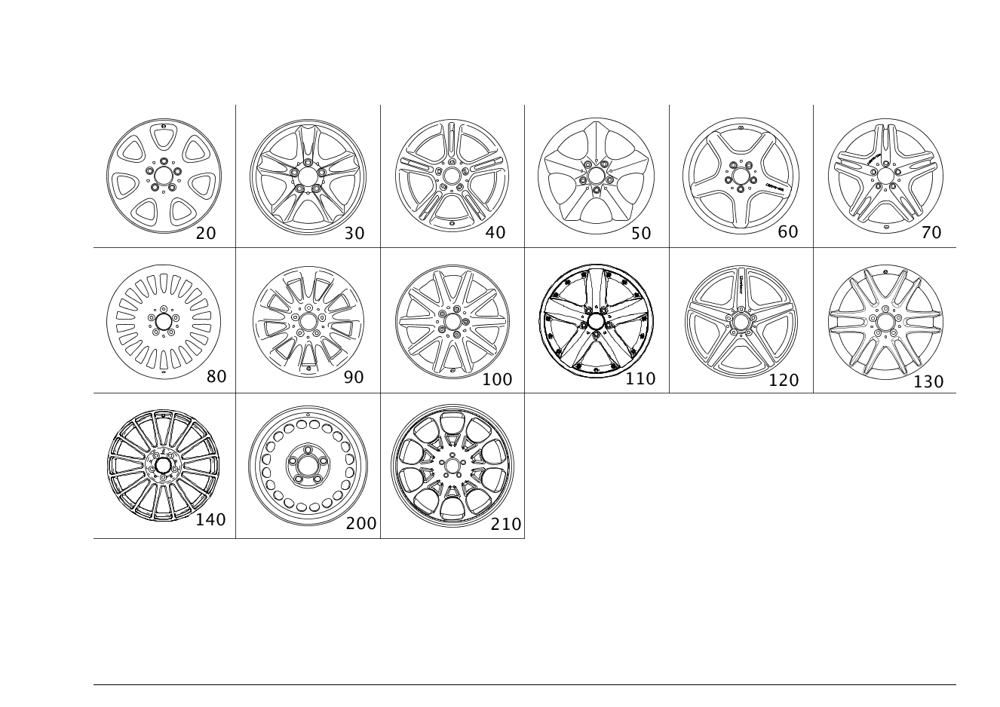

| № | Артикул | Название | Кол. | Примечание |
|---|---|---|---|---|
| 20 | A 209 401 28 02 | Дисковое колесо | 2 | КОЛЕСНЫЙ ДИСК С 7 ОТВЕРСТИЯМИ ДЛЯ ПЕРЕДНЕГО МОСТА; 7J X 16 H2 ET 37 |
| 20 | A 209 401 29 02 | Дисковое колесо | 2 | КОЛЕСНЫЙ ДИСК С 7 ОТВЕРСТИЯМИ ДЛЯ ЗАДНЕГО МОСТА; 8J X 16 H2 ET 31 |
| 20 | A 209 401 28 02 | Дисковое колесо | 2 | КОЛЕСНЫЙ ДИСК С 7 ОТВЕРСТИЯМИ ДЛЯ ЗАДНЕГО МОСТА; 7J X 16 H2 ET 37 |
| 20 | A 209 401 02 02 | КОЛЕСО ДИСКОВОЕ | 2 | КОЛЕСНЫЙ ДИСК С 7 ОТВЕРСТИЯМИ ДЛЯ ПЕРЕДНЕГО МОСТА; 7J X 16 H2 ET 37 |
| 20 | A 209 401 28 02 | Дисковое колесо | 2 | КОЛЕСНЫЙ ДИСК С 7 ОТВЕРСТИЯМИ ДЛЯ ПЕРЕДНЕГО МОСТА; 7J X 16 H2 ET 37 |
| 20 | A 209 401 10 02 | КОЛЕСО ДИСКОВОЕ | 2 | КОЛЕСНЫЙ ДИСК С 7 ОТВЕРСТИЯМИ ДЛЯ ЗАДНЕГО МОСТА; 8J X 16 H2 ET 31 |
| 20 | A 209 401 29 02 | Дисковое колесо | 2 | КОЛЕСНЫЙ ДИСК С 7 ОТВЕРСТИЯМИ ДЛЯ ЗАДНЕГО МОСТА; 8J X 16 H2 ET 31 |
| 20 | A 209 401 02 02 | КОЛЕСО ДИСКОВОЕ | 2 | КОЛЕСНЫЙ ДИСК С 7 ОТВЕРСТИЯМИ ДЛЯ ЗАДНЕГО МОСТА; 7J X 16 H2 ET 37 |
| 20 | A 209 401 28 02 | Дисковое колесо | 2 | КОЛЕСНЫЙ ДИСК С 7 ОТВЕРСТИЯМИ ДЛЯ ЗАДНЕГО МОСТА; 7J X 16 H2 ET 37 |
| 20 | A 209 401 04 02 | КОЛЕСО ДИСКОВОЕ | 2 | КОЛЕСНЫЙ ДИСК С 7 ОТВЕРСТИЯМИ ДЛЯ ПЕРЕДНЕГО МОСТА; 7.5J X 17 H2 ET 36 |
| 20 | A 209 401 30 02 | Дисковое колесо | 2 | КОЛЕСНЫЙ ДИСК С 7 ОТВЕРСТИЯМИ ДЛЯ ПЕРЕДНЕГО МОСТА; 7.5J X 17 H2 ET 36 |
| 20 | A 209 401 12 02 | КОЛЕСО ДИСКОВОЕ | 2 | КОЛЕСНЫЙ ДИСК С 7 ОТВЕРСТИЯМИ ДЛЯ ЗАДНЕГО МОСТА; 8.5J X 17 H2 ET 30 |
| 20 | A 209 401 31 02 | Дисковое колесо | 2 | КОЛЕСНЫЙ ДИСК С 7 ОТВЕРСТИЯМИ ДЛЯ ЗАДНЕГО МОСТА; 8.5J X 17 H2 ET 30 |
| 20 | A 209 401 04 02 | КОЛЕСО ДИСКОВОЕ | 2 | КОЛЕСНЫЙ ДИСК С 7 ОТВЕРСТИЯМИ ДЛЯ ЗАДНЕГО МОСТА; 7.5J X 17 H2 ET 36 |
| 20 | A 209 401 30 02 | Дисковое колесо | 2 | КОЛЕСНЫЙ ДИСК С 7 ОТВЕРСТИЯМИ ДЛЯ ЗАДНЕГО МОСТА; 7.5J X 17 H2 ET 36 |
| 30 | A 209 401 01 02 | Дисковое колесо | 2 | КОЛЕС.ДИСК СО СДВОЕН.СПИЦАМИ С ДЛЯ ПЕРЕД.МОСТА; 7J X 16 H2 ET 37 |
| 30 | A 209 401 03 02 | КОЛЕСО ДИСКОВОЕ | 2 | КОЛЕС.ДИСК СО СДВОЕН.СПИЦАМИ С ДЛЯ ПЕРЕД.МОСТА; 7.5J X 17 H2 ET 36 |
| 30 | A 209 401 11 02 | Дисковое колесо | 2 | КОЛЕС.ДИСК СО СДВОЕН.СПИЦАМИ ДЛЯ ЗАД. МОСТА; 8J X 16 H2 ET 32 |
| 30 | A 209 401 13 02 | КОЛЕСО ДИСКОВОЕ | 2 | КОЛЕС.ДИСК СО СДВОЕН.СПИЦАМИ ДЛЯ ЗАД. МОСТА; 8.5J X 17 H2 ET 30 |
| 30 | A 209 401 01 02 | Дисковое колесо | 2 | КОЛЕС.ДИСК СО СДВОЕН.СПИЦАМИ ДЛЯ ЗАД. МОСТА; 7J X 16 H2 ET 37 |
| 30 | A 209 401 03 02 | КОЛЕСО ДИСКОВОЕ | 2 | КОЛЕС.ДИСК СО СДВОЕН.СПИЦАМИ ДЛЯ ЗАД. МОСТА; 7.5J X 17 H2 ET 36 |
| 50 | A 209 401 05 02 | Дисковое колесо | 2 | КОЛЕСНЫЙ ДИСК С 5 СПИЦАМИ ДЛЯ ПЕРЕДНЕГО МОСТА; 7.5J X 17 H2 ET 36 |
| 50 | A 209 401 06 02 | КОЛЕСО ДИСКОВОЕ | 2 | КОЛЕСНЫЙ ДИСК СО СПИЦАМИ С 5 ОТВЕРСТИЯМИ ДЛЯ ЗАДНЕГО МОСТА; 8.5J X 17 H2 ET 30 |
| 50 | A 209 401 05 02 | Дисковое колесо | 2 | КОЛЕСНЫЙ ДИСК С 5 СПИЦАМИ ДЛЯ ЗАДНЕГО МОСТА; 7.5J X 17 H2 ET 36 |
| 60 | A 209 401 16 02 | Дисковое колесо | 2 | КОЛЕСНЫЙ ДИСК СО СПИЦАМИ ДЛЯ ПЕРЕДНЕГО МОСТА; 7.5J X 18 H2 ET 37 |
| 60 | A 209 401 17 02 | Дисковое колесо | 2 | КОЛЕСНЫЙ ДИСК СО СПИЦАМИ ДЛЯ ЗАДНЕГО МОСТА; 8.5J X 18 H2 ET 30 |
| 70 | A 209 401 14 02 | Колесо со сдвоен. спицами | 2 | КОЛЕС.ДИСК СО СДВОЕН.СПИЦАМИ С ДЛЯ ПЕРЕД.МОСТА; 7.5J X 18 EH2 ET 37 |
| 70 | A 209 401 48 02 | Колесо со сдвоен. спицами | 2 | КОЛЕС.ДИСК СО СДВОЕН.СПИЦАМИ С ДЛЯ ПЕРЕД.МОСТА; 7.5 J X 18 H2 ET 37 |
| 70 | A 209 401 15 02 | Колесо со сдвоен. спицами | 2 | КОЛЕС.ДИСК СО СДВОЕН.СПИЦАМИ ДЛЯ ЗАД. МОСТА; 8.5J X 18 EH2 ET 30 |
| 200 | A 203 400 03 02 | Дисковое колесо (DISK WHEEL) | 1 | СТАЛЬН. КОЛЕС. ДИСК, ЗАПАС. КОЛЕСО; 7J X 16 H2 ET 37 |
| 200 | A 209 400 04 02 | Дисковое колесо (DISK WHEEL) | 1 | СТАЛЬН. КОЛЕС. ДИСК, ЗАПАС. КОЛЕСО; 3.5B X 16 H2 ET 17 |
| 200 | A 209 400 00 02 | Дисковое колесо (DISK WHEEL) | 1 | КОЛЕСНЫЙ ДИСК С 10 ОТВЕРСТИЯМИ ДЛЯ ЗАПАСНОГО КОЛЕСА; 7.5J X 17 H2 ET 36 |
| 200 | A 209 400 00 02 | Дисковое колесо (DISK WHEEL) | 1 | КОЛЕСНЫЙ ДИСК С 10 ОТВЕРСТИЯМИ ДЛЯ ЗАПАСНОГО КОЛЕСА; 7.5J X 17 H2 ET 36 |
| 270 | A 203 580 00 10 | Короб для запчастей (PARTS BOX) | 1 | КОМПЛЕКТ ДЕТАЛЕЙ, БОЛТ С КРУГЛОЙ ГОЛОВКОЙ ДЛЯ СТАЛЬНОГО ЗАПАСНОГО КОЛЕСА; M12X1.5X21 |
| 290 | A 220 400 01 25 | Крышка ступицы колеса | 4 | DISC WHEEL,SILVER |
| 290 | A 171 400 00 25 | Крышка ступицы колеса | 4 | DISC WHEEL,BLUE |
| 290 | A 220 400 01 25 | Крышка ступицы колеса | 4 | КОЛЕСО ДИСКОВОЕ |
| 320 | A 203 401 02 70 | Винт со сфер. буртиком | 20 | КОЛЕСНЫЕ ДИСКИ К ПЕРЕДНЕМУ И ЗАДНЕМУ МОСТУ; M12X1.5X40 MM |
| 320 | A 000 990 10 07 | Винт со сфер. буртиком | 20 | КОЛЕСНЫЕ ДИСКИ К ПЕРЕДНЕМУ И ЗАДНЕМУ МОСТУ; M12X1.5X40 MM |
| 320 | A 000 990 48 07 | Винт со сфер. буртиком (SPHERICAL COLLAR SCREW) | 20 | КОЛЕСНЫЕ ДИСКИ К ПЕРЕДНЕМУ И ЗАДНЕМУ МОСТУ; M12X1.5X40 |
| 320 | A 000 990 49 07 | Винт со сфер. буртиком (SPHERICAL COLLAR SCREW) | 20 | КОЛЕСНЫЕ ДИСКИ К ПЕРЕДНЕМУ И ЗАДНЕМУ МОСТУ; M14X1,5X30,7 |
| 330 | A 124 401 07 28 | Удерживающая пружина (RETAINING SPRING) | NB | КРЕПЛЕНИЕ БАЛАНСИРОВОЧНОГО ГРУЗА |
| 340 | A 171 401 27 94 | Балансировочный грузик (BALANCING WEIGHT) | NB | 5 GRAMM |
| 340 | A 171 401 28 94 | Балансировочный грузик (BALANCING WEIGHT) | NB | 10 GRAMM |
| 340 | A 171 401 29 94 | Балансировочный грузик (BALANCING WEIGHT) | NB | 15 GRAMM |
| 340 | A 171 401 14 94 | Балансировочный грузик (BALANCING WEIGHT) | NB | 20 GRAMM |
| 340 | A 171 401 15 94 | Балансировочный грузик (BALANCING WEIGHT) | NB | 25 GRAMM |
| 340 | A 171 401 16 94 | Балансировочный грузик (BALANCING WEIGHT) | NB | 30 GRAMM |
| 340 | A 171 401 17 94 | Балансировочный грузик (BALANCING WEIGHT) | NB | 35 GRAMM |
| 340 | A 171 401 18 94 | Балансировочный грузик (BALANCING WEIGHT) | NB | 40 GRAMM |
| 340 | A 171 401 19 94 | Балансировочный грузик (BALANCING WEIGHT) | NB | 45 GRAMM |
| 340 | A 171 401 20 94 | Балансировочный грузик (BALANCING WEIGHT) | NB | 50 GRAMM |
| 340 | A 171 401 21 94 | Балансировочный грузик (BALANCING WEIGHT) | NB | 55 GRAMM |
| 340 | A 171 401 22 94 | Балансировочный грузик (BALANCING WEIGHT) | NB | 60 GRAMM |
| 350 | A 171 401 01 94 | Балансировочный грузик (BALANCING WEIGHT) | NB | ПРИКЛЕЕННОЕ ИСПОЛНЕНИЕ; 5 GRAMM |
| 350 | A 171 401 02 94 | Балансировочный грузик (BALANCING WEIGHT) | NB | ПРИКЛЕЕННОЕ ИСПОЛНЕНИЕ; 10 GRAMM |
| 350 | A 171 401 03 94 | Балансировочный грузик (BALANCING WEIGHT) | NB | ПРИКЛЕЕННОЕ ИСПОЛНЕНИЕ; 15 GRAMM |
| 350 | A 171 401 04 94 | Балансировочный грузик (BALANCING WEIGHT) | NB | ПРИКЛЕЕННОЕ ИСПОЛНЕНИЕ; 20 GRAMM |
| 350 | A 171 401 05 94 | Балансировочный грузик (BALANCING WEIGHT) | NB | ПРИКЛЕЕННОЕ ИСПОЛНЕНИЕ; 25 GRAMM |
| 350 | A 171 401 06 94 | Балансировочный грузик (BALANCING WEIGHT) | NB | ПРИКЛЕЕННОЕ ИСПОЛНЕНИЕ; 30 GRAMM |
| 350 | A 171 401 07 94 | Балансировочный грузик (BALANCING WEIGHT) | NB | ПРИКЛЕЕННОЕ ИСПОЛНЕНИЕ; 35 GRAMM |
| 350 | A 171 401 08 94 | Балансировочный грузик (BALANCING WEIGHT) | NB | ПРИКЛЕЕННОЕ ИСПОЛНЕНИЕ; 40 GRAMM |
| 350 | A 171 401 09 94 | Балансировочный грузик (BALANCING WEIGHT) | NB | ПРИКЛЕЕННОЕ ИСПОЛНЕНИЕ; 45 GRAMM |
| 350 | A 171 401 10 94 | Балансировочный грузик | NB | ПРИКЛЕЕННОЕ ИСПОЛНЕНИЕ; 50 GRAMM |
| 350 | A 171 401 11 94 | Балансировочный грузик (BALANCING WEIGHT) | NB | ПРИКЛЕЕННОЕ ИСПОЛНЕНИЕ; 55 GRAMM |
| 350 | A 171 401 12 94 | Балансировочный грузик (BALANCING WEIGHT) | NB | ПРИКЛЕЕННОЕ ИСПОЛНЕНИЕ; 60 GRAMM |
| 400 | A 002 540 86 17 | Датчик давл. воздуха шины | 2 | СИСТЕМА КОНТРОЛЯ ДАВЛЕНИЯ В ШИНАХ |
| 400 | A 002 540 90 17 | Датчик давл. воздуха шины | 2 | СИСТЕМА КОНТРОЛЯ ДАВЛЕНИЯ В ШИНАХ |
| 400 | A 003 540 02 17 | Датчик давл. воздуха шины (TIRE PRESSURE SENSOR) | 2 | СИСТЕМА КОНТРОЛЯ ДАВЛЕНИЯ В ШИНАХ; 433.92 MHZ |
| 400 | A 002 540 86 17 | Датчик давл. воздуха шины | 2 | СИСТЕМА КОНТРОЛЯ ДАВЛЕНИЯ ВОЗДУХА В ШИНАХ (RDK) |
| 400 | A 002 540 90 17 | Датчик давл. воздуха шины | 2 | СИСТЕМА КОНТРОЛЯ ДАВЛЕНИЯ ВОЗДУХА В ШИНАХ (RDK) |
| 400 | A 003 540 02 17 | Датчик давл. воздуха шины (TIRE PRESSURE SENSOR) | 2 | СИСТЕМА КОНТРОЛЯ ДАВЛЕНИЯ ВОЗДУХА В ШИНАХ (RDK); 433.92 MHZ |
| 420 | A 000 400 02 13 | - Вентиль шины (TIRE VALVE) | 2 | РЕЗИН. КЛАПАН СПЕРЕДИ И СЗАДИ |
| 420 | A 000 400 02 13 | Вентиль шины (TIRE VALVE) | 2 | РЕЗИН. КЛАПАН СПЕРЕДИ И СЗАДИ |
| 420 | A 001 401 27 13 | - Клапан (VALVE) | 2 | СТАЛЬН. КЛАПАН СПЕРЕДИ И СЗАДИ |
| 420 | A 000 400 45 13 | - Вентиль шины (TIRE VALVE) | 2 | СИСТЕМА КОНТРОЛЯ ДАВЛЕНИЯ ВОЗДУХА В ШИНАХ (RDK) |
| 420 | A 000 400 45 13 | - Вентиль шины (TIRE VALVE) | 2 | СИСТЕМА КОНТРОЛЯ ДАВЛЕНИЯ ВОЗДУХА В ШИНАХ (RDK) |
| 420 | A 000 400 34 13 | - Вентиль шины | 2 | СПЕРЕДИ И СЗАДИ |
| 420 | A 000 400 34 13 | - Вентиль шины | 2 | СПЕРЕДИ И СЗАДИ |
| 420 | A 000 400 03 13 | - Вентиль шины (TIRE VALVE) | 1 | ЗАПАСНОЕ КОЛЕСО |
| 420 | A 000 400 02 13 | Вентиль шины (TIRE VALVE) | 1 | ЗАПАСНОЕ КОЛЕСО |
| 420 | A 000 400 29 13 | Вентиль шины (TIRE VALVE) | 1 | ЗАПАСН.КОЛЕСО |
| 430 | A 000 400 53 13 | - Вентиль шины | 2 | |
| 430 | A 000 400 57 13 | - Вентиль шины (TIRE VALVE) | 2 | |
| 430 | A 000 400 10 00 | - Вентиль шины (TIRE VALVE) | 2 | |
| 430 | A 000 400 53 13 | - Вентиль шины | 2 | |
| 430 | A 000 400 57 13 | - Вентиль шины (TIRE VALVE) | 2 | |
| 430 | A 000 400 10 00 | - Вентиль шины (TIRE VALVE) | 2 | |
| 440 | A 000 401 12 14 | - Гайка вентиля (VALVE NUT) | 2 | СПЕРЕДИ И СЗАДИ |
| 440 | A 000 401 12 14 | - Гайка вентиля (VALVE NUT) | 2 | СПЕРЕДИ И СЗАДИ |
| 450 | A 000 401 06 09 | - Защитный колпачок (PROTECTIVE CAP) | NB | |
| 450 | N 007757 008600 | - Колпачок вентиля (VALVE CAP) | NB |
Позиций: 92 · подписано на схемах: 92 · колесо — плавный зум в курсор, перетаскивание — пан, двойной клик — зум, клик по артикулу — скопировать.